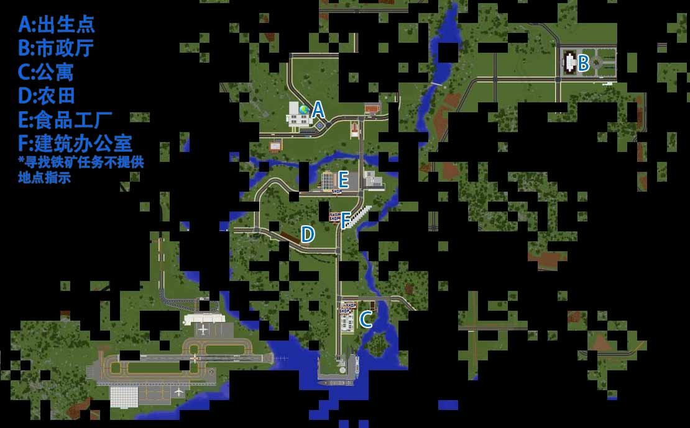

出生点——中央医院
玩家死后只能在这里复活，非常真实

码头
完成转正任务后玩家可以从码头的矿船前往矿物世界

海岛机场
毫无用处的超大花瓶
渔民小屋和公寓
渔民小屋里的老渔民提供钓鱼日常任务
海岛世界是梦の世界服务器最新的精品生存世界。在海岛，我们向火柴盒说不，向流浪帐篷说不，向偷懒的穴居者说不。在海岛，我们用全新的建筑流程，致力于做出即美观又实用的建筑。来海岛吧，提升自己的建筑水平，靠建筑来获得财富吧！

海岛的食品工厂空空如也，烟的走向预示了这个世界的荒谬
生存规则
现有部分已经生效违规行为记录
【注意】
海岛的矿业依靠自动矿机而非人工挖掘，所以只允许出于应急目的（比如在野外需要制作工具）采集裸露在外的散乱石堆（混杂了原石，石头，半砖和藤曼）。
完成海岛主线任务后且常驻海岛的人员可以通过港口的矿船前往矿物世界。
【重要】新手公寓规则
不得破坏公寓原有结构和设施。如果对私人区域进行改造，搬出以前请务必恢复原样，未能做到这点将被处以1000元罚款。
如果需要帮助请在群内联系管理员。
盗窃
涉案金额小于128且为首次的，监禁3天
涉案金额大于等于128且为首次的，监禁7天
累计2次，监禁一个月
累计3次，永久封禁
未经许可大规模破坏公共区域地形
首次发现将被警告。
警告后首次违规，监禁3天
累计两次，永久封禁
未经许可破坏他人/公共财产，包括且不限于建筑，动物，农产品等
初犯，且损毁不严重的，监禁3天
累计2次或者初犯且损毁严重的监禁一个月
累计3次，永久封禁
故意杀死玩家且受害人要求追究责任
初犯，监禁7天
累计2次，监禁一个月
累计3次，永久封禁
破坏服务器性能的行为，包括且不限于高频红石脉冲，大规模水流等
初犯且主观无意，且有及时补救、自首情节的，监禁3天
初犯且主观故意，监禁一个月
累计2次 永久封禁
聊天内刷屏，人身攻击，广告等，经劝阻无效
初犯，监禁3小时
累计2次，监禁1天
累计3次及以上，监禁7天
服务器规则非建筑部分同样适用于海岛世界

主线任务
第一阶段：安家
为了您的安全，请尽量只在白天出行。
第一阶段跑路指引视频，路痴请看这里
1 与路人甲（坐标 2218/39/1841）交谈（右击npc进行对话）,直到获得市政厅坐标
2 前往市政厅，与工作人员（坐标 3085.5/47/1669.5）交谈。提示：直接越野是最佳地面路线。
[如果需要公寓]
3 将确认单交给公寓管理员（坐标 2349.5/44/2514.5），然后在qq群内联系管理员以获得入住帮助
[暂未生效]如果在跑路过程中遗失了确认单，请重新前往市政厅领取
第二阶段 足食
以下阶段任务都在新手岛上进行
这一阶段的任务由工作人员[如果不需要新手公寓]或者公寓管理员开启
1 前往附近的农田，向农场主（坐标 2237.5/44/2292.5）报到
2 收取一组小麦交给农场主
3 再收获三组小麦，将小麦运送到食品工厂，交到食品工厂员工（坐标 2299.5/34/2104.5）手中
4 向工厂提供燃料：一组木炭，交给食品工厂员工
第三阶段 勘探
这一阶段的任务由食品工厂员工开启
1 寻找附近的铁矿（2045/2249）。提示：铁矿在新手岛上，位于市政道路附近。抵达铁矿后右击门口附近的牌子完成任务。
2 使用矿机，向矿工提供一组圆石
第四阶段 筑造
这一阶段的任务由矿工开启
抵达建筑办公室，与建筑办公室管理员（坐标 2337.5/37/2190.5）对话。
多余的材料请放在门外空地上的箱子里
新手主线任务完结。 
日常任务
完成日常任务可以获得货币兑换券，在新手公寓底楼的便利店可以兑现兑换券。
食品工厂：食品工厂员工（坐标 2299.5/34/2104.5）
原料供应。提供一组小麦 奖励货币 100
燃料供应。提供一组木炭 奖励货币100
原料供应。提供一组生牛肉 奖励货币 200
原料供应。提供一组生羊肉 奖励货币 200
原料供应。提供一组生猪肉 奖励货币 200
原料供应。提供一组生鸡肉 奖励货币 100
风车：农场主（坐标 2237.5/44/2292.5）
维修任务。提供一组原木 奖励货币 100
建筑办公室：建筑办公室管理员（坐标 2337.5/37/2190.5）
原料供应。提供一组原石 奖励货币 100
钓鱼小屋：老渔民（坐标 2446 38 2480）
燃料供应。提供一组木炭 奖励货币100
原料供应。提供一组鱼 奖励货币 200
公寓管理员：公寓管理员（坐标 2349.5/44/2514.5）
维修任务。提供一个铁锭 奖励货币 100
杀怪任务。杀死任意野怪50个 奖励货币500
消防队： 消防员（坐标 2449 39 1863）
食物供应。提供一组面包 奖励货币200
官方矿物商店：店员 2368/44/2470
兑换矿物：提供8个绿宝石，奖励一个钻石
//这个任务严格执行每24小时只能接一次

物价基准
以 原木每组64 为基础，官方收购价是基准价格的一半，官方出售价同基准价海岛当前开放的交易地点有：新手公寓底楼的便利店、官方矿物商店，建筑办公室，食品工厂附近的石头空地。
土地价格 每格10
矿物类
绿宝石 单价40 官方不出售
钻石 单价320
铁矿石 每组320
金矿石 每组640
红石矿石 每组640
青金石矿石 每组640
农作物类
小麦 胡萝卜 土豆 甘蔗 甜菜根 鸡蛋 每组64
牛肉 鸡肉 羊肉 猪肉 各种鱼 苹果 兔肉 每组128
西瓜片 每组32
南瓜 每组128

建造首页

建筑规则/建造流程
建筑流程
1，规划/申请用地
在已经有染色羊毛标注的区域，首次申请者可以免费获取用地。
在没有染色羊毛标注的区域，首次申请购买私人住宅用地价格为土地价格为面积*1。
非首次申请者用地价格为土地价格为面积*5。
拓展现有的土地价格为面积*2
对于占据特殊地形，如山坡/海滩而不能有效利用的，管理员将会询问是否有更换位置的意向。同意转移将会得到土地价格*2的补偿金和免费的替换用地。
2，建造流程
第一阶段：绘制房型图，墙壁位置，门窗位置，房间用途均需要标注，每一层都需要有对应的房型图，在游戏内用染色羊毛绘制， 并且使用合适的材料完成沿街方向的墙面
只有完成第一阶段以后才能继续
第二阶段，完成主体结构，要求内外墙壁完工，顶部封顶，内部天花板地板完工。建筑风格需要符合地区要求，请向管理员咨询建筑风格事宜。
第三阶段，内部设计
为了建造出能够通过验收的建筑请参考海岛的现有建筑 以及群相册的建筑示例图片。
长时间未能通过验收的建筑项目将会被爆破（并不是）
未能在开工后两个月内完工且未提交延期申请的土地将会被收回，已经放置的方块将被移除。
管理员会提供建筑指导，有什么疑问请尽管问，我们将尽可能解答。
对建筑的基本要求：
4+2：内部空间4格高，结合天花板和地板的楼板厚度为2（也就是说天花板和地板建议使用不同材料）
窗户：窗户和墙面务必做出层次感，如果墙面厚度为1则窗户必须使用玻璃板而不是玻璃块，建议墙面厚度2，玻璃砖窗户向内凹陷一格同时使用栏杆、活板门或者地毯做窗框
卫星地图
卫星地图
在线卫星地图注册说明
1，进入卫星地图页面，选择对话框右上角的注册绑定
2，按要求填写注册表单。
获取注册码：在游戏内聊天框输入 /dynmap webregister，会获得一个“XXXX-XXXX”格式的注册码。
3，完成注册绑定流程后登陆卫星地图页面，便可以查看服务器的实时地图
静态地图
任务相关地点海岛全貌